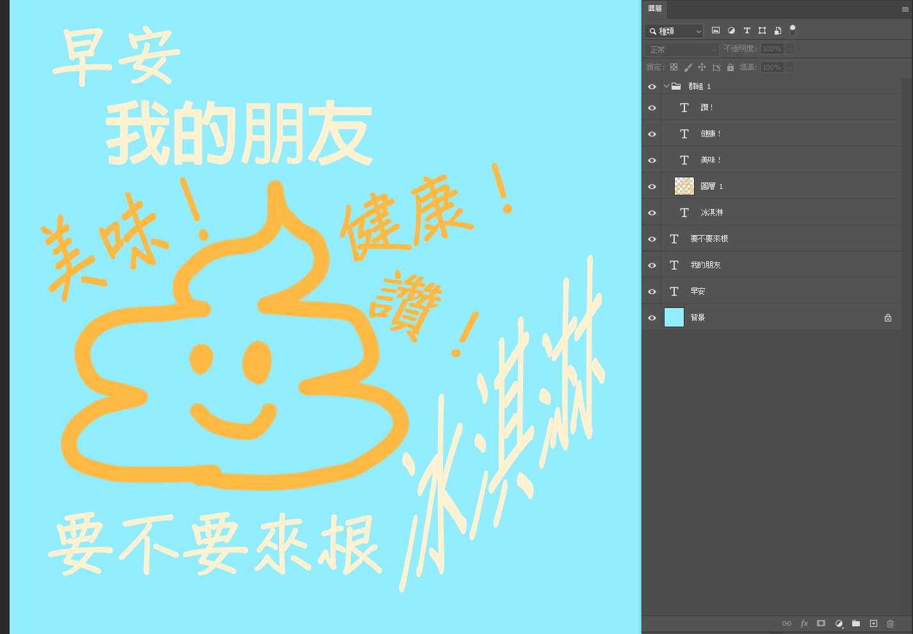
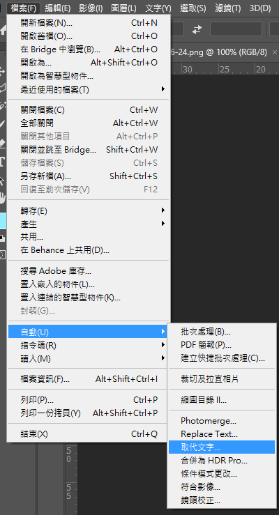
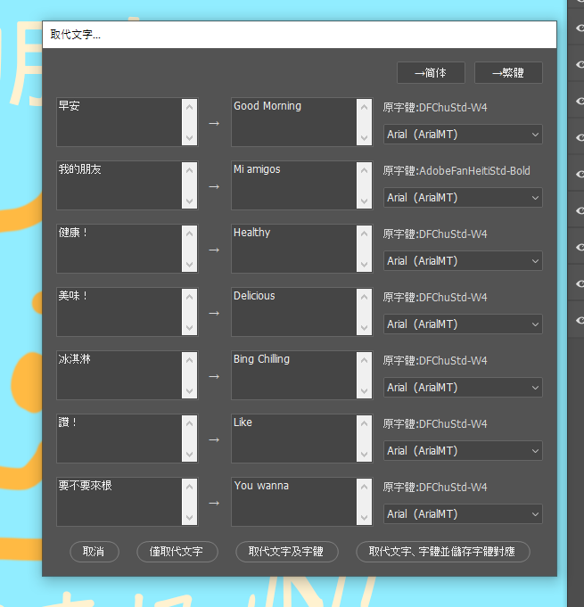
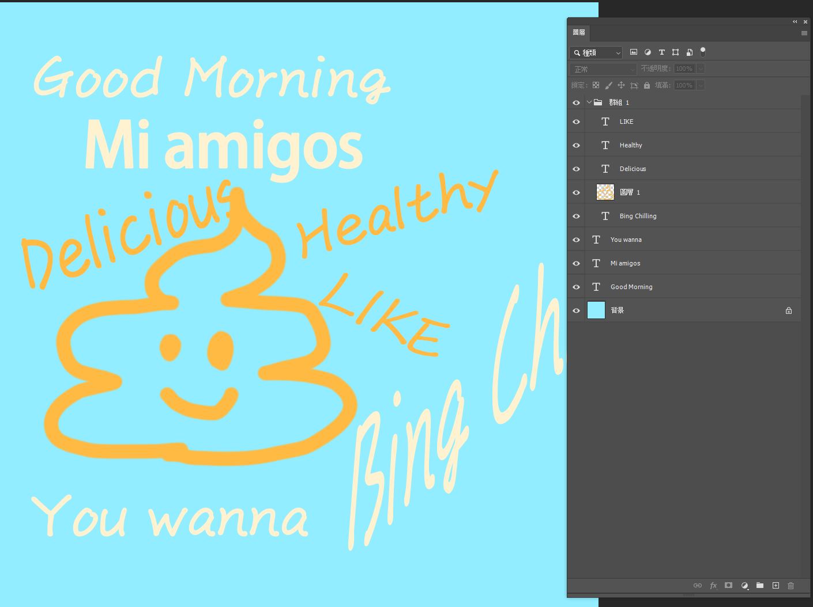

Photoshop腳本
在一個視窗內更改所有文字
安裝方法
- 到本頁下方下載後得到 Photoshop_ReplaceTxt.zip解壓縮
- 把 Xquid-ReplaceTxt_zh-tw.jsx 這個檔案放到 [你的PS安裝目錄]/Presets/Scripts/ 底下
使用方法
-

- 打開一個有文字圖層的psd檔 
- 點擊 檔案(F)→自動(U)→取代文字… 
- 在右邊把那些字改掉
- 有需要也可以幫他們選個字體
- 按下面那四個按鈕其中一個（*取消會讓你剛剛打的字都消失喔） 
- 塔啦！神奇腳本讓你的圖片更加國際化！
下載
僅測試於 Windows 之 Photoshop 2020 版本，其他版本不保證可用：
點我下載